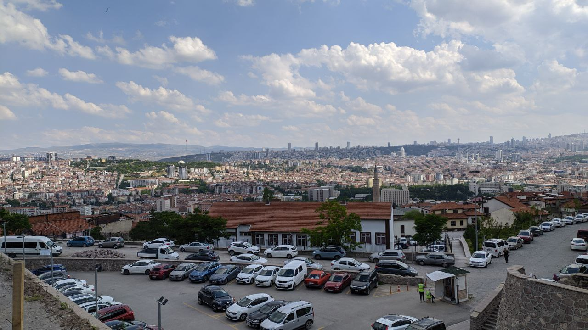

George Seletski
George Seletski
As I did not post anything in telegram channel,I decided to fix it. Firstly, I got all my essential documnets from Comenius Universety in Bratislava, Slovakia. And I am currently waiting for an appoitment in Slovak Consulance.
